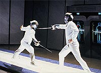
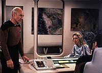
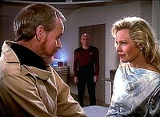
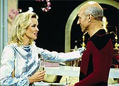
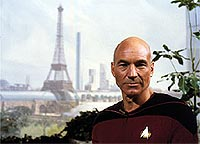

|
MANCHETE
DO EPISDIO
Episdio
traz a tona memrias de Picard
em conceito confuso de fico cientfica
Episdio
anterior | Prximo
episdio
Sinopse:
Data Estelar: 41697.9.
Em viagem a Sarona VIII para uma licena, a tripulao da
Enterprise experimenta um estranho fenmeno em que um momento do
tempo misteriosamente se repete. Logo depois, a nave recebe um sinal
de socorro de Vandor IV, onde um cientista chamado Paul Manheim
estava conduzindo experimentos sobre tempo no-linear.
 Aps
resgatar Manheim e sua esposa, Jenice (que por acaso um antigo
amor do capito Picard), a tripulao descobre que o experimento
do cientista no s foi responsvel pela distoro que eles
sentiram, mas tambm abriu uma janela para uma nova dimenso. Como
resultado da falha, todos os colegas do pesquisador morreram. Alm
disso, Manheim tambm est morrendo, j que sua neuroqumica foi
danificada por ele ter flutuado entre duas dimenses.
Para salvar a vida do cientista e evitar que o experimento
interrompido arrebente o tecido do espao-tempo galctico e
confunda a percepo de todos acerca da realidade, Picard precisa
criar um plano para vedar o buraco para a outra dimenso. Ele
ordena que Data v a Vandor IV para vedar a passagem.
 Usando
o laboratrio do cientista e sua capacidade de no sentir
desorientao pelas distores temporais, o andride consegue
depositar exatamente a quantidade de anti-matria necessria para
selar o buraco. O procedimento d certo, e Manheim comea a se
recuperar. Ele e Jenice decidem voltar ao laboratrio, para que o
cientista possa continuar seus estudos.
Comentrios:
"We'll Always Have Paris" uma das
primeiras tentativas, tmida ainda, de aplicar os chamados "high-concepts"
em Jornada nas Estrelas. Episdios desse tipo (que podem ser
definidos como histrias em que o foco do enredo est em alguma
manipulao das leis da fsica, qumica ou biologia que produz
resultados inesperados e paradoxos) exigem um estudo do enredo
extremamente bem feito, para evitar incongruncias ao longo da
execuo.
Como um primeiro rascunho desse tipo de histria, o episdio acaba
deixando passar muitas dessas confuses. Se voc parar para pensar
sobre os efeitos do experimento de Manheim, ver que o primeiro
"soluo", com Picard treinando esgrima com um tripulante,
tem um efeito diferente do segundo "soluo", em que
Picard, Riker e Data se encontram com ssias de outra linha
temporal no turboelevador.
 Enquanto
na primeira situao, o tempo simplesmente rebobinado, na
segunda ele efetivamente duplicado. A diferena sutil, mas os
resultados so diferentes. Se o segundo efeito fosse igual ao
primeiro, no teramos um encontro de ssias, mas sim Riker,
Picard e Data simplesmente andando para trs e saindo de costas do
elevador para novamente voltarem a entrar.
Podemos at dar um desconto, pela inteno dos roteiristas de
tentar criar na audincia exatamente a sensao de desorientao
mencionada no episdio e pelo fato de a cena ser muito mais
interessante do jeito que foi construda, mas o fato que h um
conflito inerente.
Isso sem falar na premissa como um todo, muito pouco clara para que
possamos acreditar nela. Ao contrrio de outras tramas do primeiro
ano, "We'll Always Have Paris" no teve o suporte
pseudo-cientfico suficiente para esclarecer o que est
acontecendo afinal de contas.
Deixando de lado o foco "high-concept", o episdio
apresenta um estudo interessante (e pouco comum na primeira
temporada) da interao entre os personagens --principalmente para
a dupla Jean-Luc Picard e Beverly Crusher.

bastante interessante e enriquecedor conhecer esse episdio amoroso
da vida do capito, vivido com Jenice. O que ningum poderia
esperar que um antigo cacho de Jean-Luc fosse uma integrante do
grupo "The Mamas and the Papas" (Michelle Phillips foi uma
das vocalistas da banda).
O lado bom disso ver o interesse de personalidades em fazer
participaes especiais em Jornada nas Estrelas --tendncia
se manifestaria com mais fora ao longo das prximas temporadas em
A Nova Gerao. O lado ruim constatar como Michelle atua
mal, estragando um papel interessante.
Em compensao, ela serve muito bem para que Beverly Crusher
mostre a que veio na Enterprise. O cimes da doutora bem
retratado por Gates McFadden, em uma rara oportunidade de
desenvolver mais a tenso amorosa que existe entre sua personagem e
o capito Picard.
 Deanna
Troi, fazendo o meio-campo entre os dois, continua sendo uma pssima
psicloga --ela no hesita em colocar o dedo na ferida dos
outros, sem a menor cerimnia. Bem feito para ela, que vive levando
dispensadas de Picard quando se oferece para ajudar. Felizmente, os
roteiristas acabariam acertando o tom da conselheira nas prximas
temporadas. Por ora, ela continua to chata quanto em segmentos que
lhe deram maior ateno, como "Haven"
ou "Skin of Evil".
Os efeitos visuais so bastante interessantes, principalmente a
cena final com os trs Datas, a em que h dois Picards, Datas e
Rikers na entradda do turboelevador e as tomadas espaciais da
estrela binria, do planetide em rbita e, claro, da Enterprise.
Citaes:
Riker - "This is
where we started, if we are us."
("Isso foi onde comeamos, se ns somos ns.")
Data - "Oh, we are us, sir, but they are also us. So indeed,
we are both us."
("Oh, ns somos ns, senhor, mas eles tambm so ns. De
fato, ambos somos ns.")
Trivia:
 O cenrio de Paris no sculo 24 visto no holodeck era uma pintura,
que foi reutilizada no filme Jornada nas Estrelas VI.
O cenrio de Paris no sculo 24 visto no holodeck era uma pintura,
que foi reutilizada no filme Jornada nas Estrelas VI.
O menu que aparece com o personagem Edouard contm os seguintes
pratos: Croissants D'ilithium, Targ Klingon la Mode e Tribbles
dans les Blankettes.
Michelle Phillips (Jenice Manheim), uma f da Srie Clssica,
e foi integrante dos "The Mamas and the Papas", conjunto
musical da dcada de 60.
Lance Spellerberg (alferes Herbert) voltaria no episdio do segundo
ano "The Icarus Factor", fazendo o mesmo
personagem.
Ficha
tcnica:
Escrito por Deborah Dean Davis
& Hannah Louise Shearer
Direo de Robert Becker
Exibido em 02/05/1988
Produo: 024
Elenco:
Patrick Stewart como
Jean-Luc Picard
Jonathan Frakes como William Thomas Riker
Brent Spiner como Data
LeVar Burton como Geordi La Forge
Michael Dorn como Worf
Gates McFadden como Beverly Crusher
Marina Sirtis como Deanna Troi
Wil Wheaton como Wesley Crusher
Elenco convidado:
Michelle Phillips
como Jenice Manheim
Rod Loomis como dr. Paul Manheim
Lance Spellerberg como chefe de transporte Herbert
Isabel Lorca como Gabrielle
Dan Kern como tenente Dean
Jean-Paul Vignon como Edouard
Kelly Ashmore como Francine
Episdio
anterior | Prximo
episdio
|